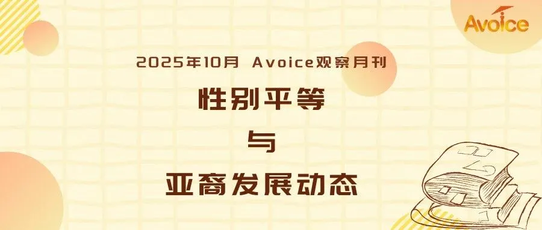

专栏引言：
十月，全球在性别平等与亚裔权益领域迎来重要节点。在性别平等领域，联合国社会发展峰会再次确认女性权利是可持续发展的基石，而日本即将迎来首位女首相的消息，则标志着女性领导力在传统保守社会中的突破 。然而，针对亚裔的暴力阴影仍未消散——从纽约华埠的连环袭击，到墨尔本街头的无端伤害，这些事件提醒我们，种族仇恨的毒瘤仍在侵蚀社会的肌体。与此同时，亚裔群体正以坚韧与才华积极争取话语权：哈佛大学招生中亚裔学生比例的历史性增长，巴黎亚洲美食节的文化交融，以及华裔钢琴家斩获肖邦大赛桂冠的荣耀，共同书写着亚裔在学术、文化与艺术领域的卓越篇章。
目录
Table of Contents
一、性别平等
News on Gender Equality
联合国妇女署敦促将性别平等置于社会发展核心
高市早苗当选自民党总裁，将成日本首位女首相
联合国“妇女、和平与安全”议程走过25年，推动女性参与缔造持久和平
二、针对亚裔的暴力
Crime against Asian Community
美国华埠一日连发五起无端袭击亚裔案
陈果仁遇害43周年，反亚裔仇恨阴影仍在
华女在澳遭随机袭击，安全警钟再次敲响
三、亚裔话语权
Voice of Asian
哈佛废除种族偏好后招生巨变，亚裔新生比例飙升至41%
第三届RICE亚洲美食节香飘巴黎，促亚洲文化交流
华裔钢琴家陆逸轩摘得肖邦大赛桂冠
01
性别平等
News
联合国妇女署敦促
将性别平等置于社会发展核心
第二届世界社会发展峰会于2025年11月初在卡塔尔举行。联合国妇女署执行主任西玛·巴胡斯率团出席，倡导将性别平等作为包容性发展的基石。
峰会聚焦三大核心议题：消除贫困、促进充分就业及社会融合。数据显示，全球每10名女性中就有1人处于极端贫困，劳动力参与率的性别差距高达27.7%。
联合国妇女署提出四大行动方向：应对女性贫困问题、投资护理经济、促进女性就业及保障少女权利。峰会期间举办了多场专题讨论，重点关注通过体面工作、社会保障及同工同酬来消除女性贫困，并倡导将护理政治重新定义为可持续发展的支柱。
推动性别平等不仅是基本人权，更是社会可持续发展的基石。必须消除贫困、打破职场壁垒、公平分配护理责任，才能构建一个所有女性都能享有尊严、机会和全面发展权利的社会。
消息来源：
unwomen. “UN Women at the Second World Summit for Social Development in Doha,” October 31, 2025.
https://www.unwomen.org/en/news-stories/announcement/2025/10/un-women-at-the-second-world-summit-for-social-development-in-doha.
News
高市早苗当选自民党总裁，
将成日本首位女首相
2025年10月4日，日本自民党总裁选举结果揭晓，高市早苗击败多名对手当选。由于自民党是国会第一大党，她预计将在近日的首相指名选举中成为日本首位女性首相。
高市早苗政治立场保守，曾多次参拜靖国神社，主张修宪扩军，被称为“女版安倍”。她上台后将面临执政联盟稳固性、经济通胀及与在野党合作等多重挑战。其极右翼政策取向可能使日本政治加速右转，并对地区局势带来影响。
女性担任领袖是性别平等的重大进步。我们应继续推动女性突破所有领域的职业天花板，确保平等机会，消除结构性障碍，构建一个真正包容、多元的发展环境。
消息来源：
周驰. “高市早苗赢了，将成为日本新任首相｜国际人物.” 中国新闻网, October 4, 2025.
https://www.chinanews.com.cn/gj/2025/10-04/10493864.shtml.
News
联合国“妇女、和平与安全”议程走过25年，推动女性参与缔造持久和平
2025年是联合国安理会通过第1325号决议、确立“妇女、和平与安全”议程25周年。 该议程首次确认性别平等对持久和平至关重要，并承诺推动女性作为和平缔造者平等参与决策。
然而当前冲突正逆转性别平等成果：2024年仅有十分之一的和平谈判包含女性谈判代表；全球军事开支在增加，而性别平等资金依然严重不足。在冲突激增至1946年以来最高水平的当下，必须抓住25周年契机，重新承诺并投资于该议程，将女性领导力置于和平进程的核心。
这一结果表明推动女性平等参与和平进程至关重要。当女性被排除在谈判桌外，冲突更易持续。必须确保女性在决策中的领导地位，这直接关系到社会能否实现持久稳定与真正繁荣。
消息来源：
unwomen. “The Women, Peace and Security Agenda,” October 20, 2025.
https://www.unwomen.org/en/articles/in-focus/women-peace-and-security-debate.
02
针对亚裔的暴力
News
美国华埠一日连发五起无端袭击亚裔案
2025年10月29日，美国纽约华埠连续发生至少五起无端袭击亚裔事件。一名33岁嫌犯克莱夫·波特在街头无故殴打多名亚裔民众，包括一名72岁华裔老翁，并高喊“去他妈的亚裔”等仇视言论。波特有超过80次前科，被捕后还袭击警察。警方以仇恨犯罪立案调查，并呼吁更多受害者报警。目前波特被控多项罪名，包括袭击罪和骚扰罪，案件仍在审理中。
这类事件令亚裔社区深感恐慌与愤怒。 必须坚决反对一切形式的种族仇恨，呼吁立法严惩仇恨犯罪，加强社区安保，共同守护亚裔族群的平安与尊严。
消息来源：
孟莎. “華埠一日連生至少5起無端襲擊亞裔案.” 美東風潮, November 1, 2025.
https://mp.weixin.qq.com/s/uJLMJR7WBMFh3zIseWE8Rw.
News
陈果仁遇害43周年，反亚裔仇恨阴影仍在
2025年是华裔青年陈果仁在美遇害43周年。1982年，他被两名误认其为日本人的白人汽车工人用棒球棍殴打致死，凶手仅获缓刑。此案曾触发全美亚裔大规模抗议，成为民权运动的重要转折点。
然而43年后，反亚裔暴力仍在持续。数据显示，2020年以来全美已发生超万起针对亚裔的仇恨事件。专家指出，每当美国与亚洲国家关系紧张，在美亚裔便容易成为替罪羊。这一“永远的外国人”刻板印象，至今仍是反亚裔暴力的深刻根源。
反亚裔暴力不仅威胁个体安全，更撕裂社会多元共存的根基。必须铭记历史教训，坚决通过立法、教育与社区行动根除仇恨，共同守护人人平等的公正社会。
消息来源：
品览世界. “美籍华裔陈果仁被杀四十三年祭 | 记住他，记住反亚裔暴力的深刻根源,” October 25, 2025.
https://mp.weixin.qq.com/s/oAZLoiBdpr99blYXjdTuKg.
News
华女在澳遭随机袭击，安全警钟再次敲响
2025年10月，36岁华裔寿司厨师Wan Lai在墨尔本市中心上班途中遭无端袭击。一名处于保释期的32岁女子突然用刀刺入其右胸，伤口离心脏仅数厘米。
经诊断，Wan Lai患上血气胸，虽无生命危险但康复缓慢。她不仅失去工作能力，更因心理创伤搬离原住所，终日生活在恐惧中。当地社区对此深感不安，已加强安保巡逻。嫌犯目前被还押候审，面临故意伤害等多项指控。
这起针对华裔的无端袭击令海外亚裔社群深感不安，削弱了他们的安全感。我们必须坚决反对针对亚裔的暴力行为，推动完善法律保护与社区支持体系，共同守护每一个生命的尊严与安全。
消息来源：
今日悉尼. “血洒当场！华女澳洲CBD随机被捅，姐姐惊魂未定：离心脏仅几厘米,” October 15, 2025.
https://mp.weixin.qq.com/s/CzxWQa0PwIypA1MKSp9I2A.
03
亚裔话语权
News
哈佛废除种族偏好后招生巨变，
亚裔新生比例飙升至41%
美国最高法院2023年禁止高校招生考虑种族因素后，哈佛大学10月23日公布了2029届新生概况，数据显现显著变化：亚裔学生占比飙升至41%，创下纪录；而黑人学生比例则降至11.5%，为十年新低。
这一“种族加分”政策的废除，被视为亚裔学生的一次突破，但也引发了关于教育公平的新争论。支持者认为这实现了“唯才录取”，批评者则担忧校园多样性将遭受重创。同时，多项招生标准（如标准化考试）的存废，也正成为新一轮公平性博弈的焦点。
亚裔凭实力在哈佛招生中证明了自己。我们必须将这种教育公平拓展至社会各领域，积极争取政治话语权，才能打破刻板印象，从根本上遏制针对亚裔的系统性歧视与暴力。
消息来源：
纽约人. “‘种族加分’废除两年后，哈佛招生版图巨变——亚裔成最大赢家，亚裔飙升至41%，黑人学生创十年新低！,” October 26, 2025. https://mp.weixin.qq.com/s/YuvwsuMN7fy6IzjD93werA.
News
第三届RICE亚洲美食节香飘巴黎，
促亚洲文化交流
第三届RICE亚洲美食节于2025年10月4日在巴黎成功举办。活动由欧洲时报文化传媒集团联合巴黎十三区政府共同主办，汇聚了来自中国、越南、泰国等11个亚洲国家的45家餐厅和15家文化协会。
巴黎十三区区长顾梅在致辞中称赞美食节展现了亚洲文化的多元魅力。活动还设有歌舞、舞狮等传统文化表演，成为亚洲青年展示创意、促进多元文化交融的重要平台，进一步增进了法国民众对亚洲文化的了解与认同。
亚洲美食节的成功展现了文化交融的力量。亚裔群体需要更多这样的平台主动发声，打破刻板印象，争取平等话语权，让文化影响力转化为推动社会公平的正能量。
消息来源：
郑云天. “第三届RICE亚洲美食节在巴黎举办.” 中国新闻网, October 6, 2025. https://www.chinanews.com.cn/gj/2025/10-06/10494466.shtml.
News
华裔钢琴家陆逸轩摘得肖邦大赛桂冠
在刚刚落幕的第19届肖邦国际钢琴大赛中，美国华裔钢琴家陆逸轩勇夺冠军，延续了华裔音乐家在该顶级赛事中的辉煌。中国选手同样表现优异，王紫桐获第三名，17岁的吕天瑶获第四名。
陆逸轩虽在美国成长，但有着深厚的中国音乐渊源：母亲来自上海，师从殷承宗等中国钢琴家。此次获奖再次彰显了华裔艺术家在国际古典乐坛的卓越成就与影响力。
华裔钢琴家陆逸轩折桂肖邦大赛，再次彰显亚裔在艺术领域的卓越才华。我们必须在所有领域争取平等机会与话语权，让亚裔成就能获得充分认可，打破“永久外国人”的刻板印象。
消息来源：
澎湃新闻. “美国华裔钢琴家陆逸轩获得第19届肖邦国际钢琴大赛冠军,” October 21, 2025.
https://www.thepaper.cn/newsDetail_forward_31817603.
* 注：本文所收录的信息仅用于分享交流，不代表Avoice的立场和观点
撰稿｜商靖其
排版&封面｜池一诺